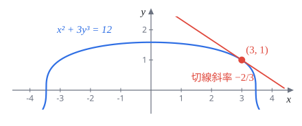
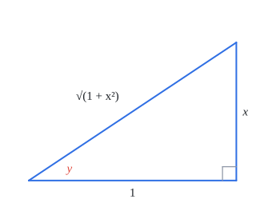
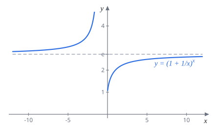
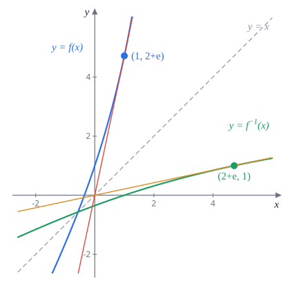

Week 5 微分 II（Differentiation II）
AP Calculus I（115 學年）Lecture Note 5 教學與題解
講義筆誤讀講義時請自己改正兩處：
- p.37 Putnam 題：函數寫成 $f_n(t)=\cos(x)\cos(2x)\cdots\cos(nx)$，變數不一致，應為 $f_n(x)$。
- p.38 最後一題的提示：$g'(f'(x))f''(x)$ 應為 $g'(f(x))f''(x)$，正確式子是 $g''(f(x))\bigl(f'(x)\bigr)^2+g'(f(x))f''(x)=0$。
5.1 隱函數微分
之前的函數都長成 $y=\text{一串跟 }x\text{ 有關的式子}$，叫顯函數，給 $x$ 直接代進去就有 $y$。
但有些關係只給一條方程式，例如
$$y^5+x^3y^2-1=\sin(x)\,y$$想知道 $x=1$ 時 $y$ 是多少，得去解一個五次方程，根本解不出公式。這種 $y$ 藏在方程式裡的叫隱函數。橢圓 $\frac{x^2}{a^2}+\frac{y^2}{b^2}=1$、雙曲線 $\frac{x^2}{a^2}-\frac{y^2}{b^2}=1$ 也是。
好消息是：不用把 $y$ 解出來也能求 $\dfrac{dy}{dx}$。把 $y$ 當成「某個 $x$ 的函數 $y(x)$」，整條方程式兩邊一起對 $x$ 微分就好。唯一要注意的是碰到 $y$ 的地方要用連鎖律，多乘一個 $y'$。
定理 5.1.1（隱函數微分）$y$ 是 $x$ 的隱函數、$f$ 可微，則
$$\frac{d}{dx}f(y)=f'(y)\cdot\frac{dy}{dx}$$例如 $\dfrac{d}{dx}y^3=3y^2y'$，$\dfrac{d}{dx}\sin y=\cos y\cdot y'$，$\dfrac{d}{dx}(xy)=y+xy'$（積法則）。
解題套路
- 兩邊對 $x$ 微分，$y$ 的項記得乘 $y'$。
- 先代點、再解 $y'$：代入數字後就只是一次方程，比先解出一般式快很多。
- 求 $y''$：把第 1 步得到的式子再微一次（$y'$ 也是 $x$ 的函數，微分會出現 $y''$），代點並把剛算好的 $y'$ 也代進去。

題 1$x^2+3y^3=12$。在 $(3,1)$ 附近把 $y$ 看成 $x$ 的可微函數，求 $(3,1)$ 處的 $\dfrac{dy}{dx}$ 與 $\dfrac{d^2y}{dx^2}$。
先確認點在曲線上：$9+3=12$。
一階：兩邊對 $x$ 微分
$$2x+9y^2y'=0$$代 $(3,1)$：$6+9y'=0$，得 $y'=-\dfrac23$。
二階：把 $2x+9y^2y'=0$ 再微一次，$9y^2y'$ 用積法則（$9y^2$ 微分是 $18y\,y'$）：
$$2+18y\,(y')^2+9y^2y''=0$$代 $y=1$、$y'=-\frac23$：$2+18\cdot\frac49+9y''=0$，即 $10+9y''=0$。
$\dfrac{dy}{dx}=-\dfrac23,\qquad \dfrac{d^2y}{dx^2}=-\dfrac{10}{9}$
題 2$y^3+xy^2+x^2y-2x^3=1$。在 $(1,1)$ 附近把 $y$ 看成 $x$ 的可微函數，求 $(1,1)$ 處的 $\dfrac{dy}{dx}$ 與 $\dfrac{d^2y}{dx^2}$。
檢查：$1+1+1-2=1$。
一階：$xy^2$、$x^2y$ 都要用積法則。
$$3y^2y'+\bigl(y^2+2xy\,y'\bigr)+\bigl(2xy+x^2y'\bigr)-6x^2=0$$代 $(1,1)$：$3y'+1+2y'+2+y'-6=0$，$6y'=3$，$y'=\dfrac12$。
二階：上式逐項再微一次。
$$\begin{aligned} \tfrac{d}{dx}\bigl(3y^2y'\bigr)&=6y(y')^2+3y^2y''\\ \tfrac{d}{dx}\bigl(y^2\bigr)&=2y\,y'\\ \tfrac{d}{dx}\bigl(2xy\,y'\bigr)&=2y\,y'+2x(y')^2+2xy\,y''\\ \tfrac{d}{dx}\bigl(2xy\bigr)&=2y+2xy'\\ \tfrac{d}{dx}\bigl(x^2y'\bigr)&=2xy'+x^2y''\\ \tfrac{d}{dx}\bigl(-6x^2\bigr)&=-12x \end{aligned}$$代 $x=y=1$、$y'=\frac12$，各項依序為
$$\left(\tfrac32+3y''\right)+1+\left(1+\tfrac12+2y''\right)+3+\left(1+y''\right)-12=6y''-4=0$$$\dfrac{dy}{dx}=\dfrac12,\qquad \dfrac{d^2y}{dx^2}=\dfrac23$（與講義答案相同）
題 3$2xy+\pi\sin y=2\pi$。在 $\left(1,\frac\pi2\right)$ 附近把 $y$ 看成 $x$ 的可微函數，求該點的 $\dfrac{dy}{dx}$ 與 $\dfrac{d^2y}{dx^2}$。
檢查：$2\cdot\frac\pi2+\pi\sin\frac\pi2=2\pi$。在這點 $\sin y=1$、$\cos y=0$，很多項會消失。
一階：
$$2y+2xy'+\pi\cos y\cdot y'=0$$代點：$\pi+2y'+0=0$，$y'=-\dfrac\pi2$。
二階：再微一次，$\pi\cos y\cdot y'$ 用積法則（$\cos y$ 微分是 $-\sin y\cdot y'$）：
$$2y'+2y'+2xy''+\pi\bigl(-\sin y\,(y')^2+\cos y\,y''\bigr)=0$$代點：$4y'+2y''-\pi(y')^2=0$，即 $-2\pi+2y''-\dfrac{\pi^3}{4}=0$。
$\dfrac{dy}{dx}=-\dfrac\pi2,\qquad \dfrac{d^2y}{dx^2}=\dfrac{\pi^3}{8}+\pi$（與講義答案相同）
5.2 反三角函數的導數
反函數本身常常寫不出好算的式子，但它一定滿足一條方程式。例如 $y=\tan^{-1}x$ 就是 $\tan y=x$。這就是隱函數，用 5.1 的方法兩邊對 $x$ 微分即可。
| 導數表（Part III）反三角函數 | |||
|---|---|---|---|
| $f(x)$ | $f'(x)$ | $f(x)$ | $f'(x)$ |
| $\sin^{-1}x$ | $\dfrac{1}{\sqrt{1-x^2}}$ | $\csc^{-1}x$ | $-\dfrac{1}{x\sqrt{x^2-1}}$ |
| $\cos^{-1}x$ | $-\dfrac{1}{\sqrt{1-x^2}}$ | $\sec^{-1}x$ | $\dfrac{1}{x\sqrt{x^2-1}}$ |
| $\tan^{-1}x$ | $\dfrac{1}{1+x^2}$ | $\cot^{-1}x$ | $-\dfrac{1}{1+x^2}$ |
講義表格左半邊留空要自己填，上表已補上（定理 5.2.1、5.2.2 與題 6）。
記憶法每一對「co」版本只差一個負號：$\cos^{-1}$ 是 $\sin^{-1}$ 加負號，$\cot^{-1}$ 是 $\tan^{-1}$ 加負號，$\csc^{-1}$ 是 $\sec^{-1}$ 加負號。原因是 $\cos^{-1}x=\frac\pi2-\sin^{-1}x$，常數微分為 $0$。
$\sec^{-1}$、$\csc^{-1}$ 的公式跟值域怎麼取有關。講義的形式 $\frac{1}{x\sqrt{x^2-1}}$ 對應值域 $\left[0,\frac\pi2\right)\cup\left[\pi,\frac{3\pi}2\right)$；若 $\sec^{-1}$ 的值域取 $\left[0,\pi\right]\setminus\{\frac\pi2\}$，分母要改成 $|x|\sqrt{x^2-1}$。考試以老師的定義為準。
定理 5.2.1$\dfrac{d}{dx}\cos^{-1}x=-\dfrac{1}{\sqrt{1-x^2}}$
定理 5.2.2$\dfrac{d}{dx}\tan^{-1}x=\dfrac{1}{1+x^2}$

題 4證明 $\dfrac{d}{dx}\tan^{-1}x=\dfrac{1}{1+x^2}$（定理 5.2.2）。
令 $y=\tan^{-1}x$，則 $\tan y=x$，其中 $-\frac\pi2\lt y\lt\frac\pi2$。兩邊對 $x$ 微分，左邊用連鎖律：
$$\sec^2y\cdot\frac{dy}{dx}=1\quad\Longrightarrow\quad\frac{dy}{dx}=\frac{1}{\sec^2y}=\cos^2y$$接著要把 $\cos y$ 換回 $x$。看上面的三角形：$\cos y=\dfrac{1}{\sqrt{1+x^2}}$（$y$ 在 $(-\frac\pi2,\frac\pi2)$，$\cos y\gt0$，取正號）。所以
$$\frac{dy}{dx}=\left(\frac{1}{\sqrt{1+x^2}}\right)^2=\frac{1}{1+x^2}$$另一種換法：$\sec^2y=1+\tan^2y=1+x^2$，一步到位。
題 5$f(x)=\cos\bigl(\tan^{-1}x\bigr)$，求 $f'(x)$。
做法一：先化簡。由三角形，$\cos(\tan^{-1}x)=\dfrac{1}{\sqrt{1+x^2}}=(1+x^2)^{-1/2}$。
$$f'(x)=-\frac12(1+x^2)^{-3/2}\cdot2x=-\frac{x}{(1+x^2)^{3/2}}$$做法二：直接連鎖律。
$$f'(x)=-\sin\bigl(\tan^{-1}x\bigr)\cdot\frac{1}{1+x^2}=-\frac{x}{\sqrt{1+x^2}}\cdot\frac{1}{1+x^2}$$（三角形的對邊除以斜邊得 $\sin y=\frac{x}{\sqrt{1+x^2}}$。）兩種做法結果相同。
$f'(x)=-\dfrac{x}{(1+x^2)^{3/2}}$
題 6$f(x)=\sin^{-1}x$，證明 $f'(x)=\dfrac{1}{\sqrt{1-x^2}}$。
令 $y=\sin^{-1}x$，即 $\sin y=x$，$-\frac\pi2\le y\le\frac\pi2$。兩邊對 $x$ 微分：
$$\cos y\cdot\frac{dy}{dx}=1\quad\Longrightarrow\quad\frac{dy}{dx}=\frac{1}{\cos y}$$在這個範圍 $\cos y\ge0$，所以 $\cos y=\sqrt{1-\sin^2y}=\sqrt{1-x^2}$，得證（$|x|\lt1$ 時分母不為 $0$）。
$\cos^{-1}x$ 用一樣的步驟：$\cos y=x$，$-\sin y\cdot y'=1$，$y\in[0,\pi]$ 時 $\sin y=\sqrt{1-x^2}$，得 $-\frac{1}{\sqrt{1-x^2}}$，就是定理 5.2.1。
5.3 對數的導數
$\ln x$ 是 $e^x$ 的反函數，套路和反三角一樣：$y=\ln x$ 寫成 $e^y=x$，兩邊微分。
| 導數表（Part IV）對數 | |
|---|---|
| $f(x)$ | $f'(x)$ |
| $\ln x$ | $\dfrac1x$ |
| $\log_a x$ | $\dfrac{1}{x\ln a}$ |
題 7證明 $\dfrac{d}{dx}\ln x=\dfrac1x$（定理 5.3.1）。
$x\gt0$，令 $y=\ln x$，等價於 $e^y=x$。兩邊對 $x$ 微分：
$$e^y\cdot\frac{dy}{dx}=1\quad\Longrightarrow\quad\frac{dy}{dx}=\frac{1}{e^y}=\frac1x$$常用的延伸：$\dfrac{d}{dx}\ln|x|=\dfrac1x$（$x\lt0$ 時 $\ln(-x)$ 微分得 $\frac{-1}{-x}$）。配上連鎖律，$\bigl(\ln g(x)\bigr)'=\dfrac{g'(x)}{g(x)}$，這條在 5.4.1 會一直用到。
題 8求導數：(a) $f(x)=\tan^{-1}(2x)$；(b) $f(x)=\log_4(1+e^x)$。
(a) 外層 $\tan^{-1}$、裡層 $2x$：
$$f'(x)=\frac{1}{1+(2x)^2}\cdot2=\frac{2}{1+4x^2}$$(b) 換底 $\log_4(1+e^x)=\dfrac{\ln(1+e^x)}{\ln4}$，$\ln4$ 是常數：
$$f'(x)=\frac{1}{\ln4}\cdot\frac{e^x}{1+e^x}=\frac{e^x}{(1+e^x)\ln4}$$題 9證明對任意實數 $k$，$\dfrac{d}{dx}x^k=kx^{k-1}$（定理 5.3.2）。
上週只證了 $k$ 是正整數的情形，這裡用 $\ln$ 證一般的 $k$（$x\gt0$）。令 $y=x^k$，兩邊取 $\ln$：
$$\ln y=k\ln x$$兩邊對 $x$ 微分，左邊用連鎖律：
$$\frac1y\cdot\frac{dy}{dx}=\frac kx\quad\Longrightarrow\quad\frac{dy}{dx}=\frac kx\cdot y=\frac kx\cdot x^k=kx^{k-1}$$題 10$f(x)=\log_a x$（$a\gt0$，$a\neq1$），求 $f'(x)$。提示：$\log_a x=\dfrac{\ln x}{\ln a}$。
$\dfrac{1}{\ln a}$ 是常數，直接提出去：
$$f'(x)=\frac{1}{\ln a}\cdot\frac1x$$$f'(x)=\dfrac{1}{x\ln a}$
（$a=1$ 時 $\ln a=0$，$\log_1$ 沒有定義，所以要排除。）
題 11求 $f(x)=3x^2\ln x$ 在 $x=e$ 的切線。
$f(e)=3e^2\cdot1=3e^2$。積法則：
$$f'(x)=6x\ln x+3x^2\cdot\frac1x=6x\ln x+3x$$$f'(e)=6e+3e=9e$。
$y=9e(x-e)+3e^2$
題 12$f(x)=\dfrac{\tan(2x)\cos^{-1}(x)+\ln(1+x)}{3\sec^3(x)+x^3\sin^{-1}(x)}$，求 $f'(0)$。提示：用定義。
直接用商法則會非常痛苦。注意 $f(0)=\dfrac{0+0}{3+0}=0$，用定義：
$$f'(0)=\lim_{h\to0}\frac{f(h)-0}{h}=\lim_{h\to0}\frac{\dfrac{\tan 2h}{h}\cos^{-1}h+\dfrac{\ln(1+h)}{h}}{3\sec^3h+h^3\sin^{-1}h}$$逐項看極限：
- $\dfrac{\tan2h}{h}=2\cdot\dfrac{\sin2h}{2h}\cdot\dfrac{1}{\cos2h}\to2$，而 $\cos^{-1}h\to\cos^{-1}0=\dfrac\pi2$，乘起來 $\to\pi$。
- $\dfrac{\ln(1+h)}{h}=\dfrac{\ln(1+h)-\ln1}{h}\to\bigl(\ln(1+x)\bigr)'\big|_{x=0}=1$。
- 分母 $\to3\cdot1+0=3$。
$f'(0)=\dfrac{\pi+1}{3}$
什麼時候用定義函數很醜、但只問某一點的導數，而且 $f$ 在那一點的值很乾淨（通常是 $0$）時，用定義往往比套公式快。題 19 (b)(c) 也是這招。
5.4 $e$ 的另一個定義
Week 1 定義 $e$ 是「讓 $y=e^x$ 在 $(0,1)$ 的切線斜率剛好為 $1$ 的數」，換成極限就是 $\displaystyle\lim_{h\to0}\frac{e^h-1}{h}=1$。有了 $\ln$ 的導數，可以推出另一個更常見的寫法：
定理 5.4.1$\displaystyle e=\lim_{x\to\infty}\left(1+\frac1x\right)^x$；而且 $x\to-\infty$ 時極限也是 $e$。

題 13證明 $\displaystyle\lim_{x\to\infty}\left(1+\frac1x\right)^x=e$（定理 5.4.1）。
想法：算 $f(x)=\ln(1+x)$ 在 $0$ 的導數，一次用公式、一次用定義，兩邊比較。
用公式：$f'(x)=\dfrac{1}{1+x}$，$f'(0)=1$。
用定義（$f(0)=0$）：
$$1=f'(0)=\lim_{h\to0}\frac{\ln(1+h)}{h}=\lim_{h\to0}\ln(1+h)^{1/h}=\ln\left(\lim_{h\to0}(1+h)^{1/h}\right)$$最後一步把 $\lim$ 搬進 $\ln$ 裡，是因為 $\ln$ 連續。
極限存在，只看右極限 $h\to0^+$ 也一樣。令 $h=\frac1x$，$h\to0^+$ 等同 $x\to+\infty$：
$$1=\ln\left(\lim_{x\to+\infty}\left(1+\frac1x\right)^x\right)$$$\ln(\text{所求})=1$，所以所求 $=e$。$x\to-\infty$ 則改看左極限 $h\to0^-$。
推廣：對任意實數 $a,b$，
$$\lim_{x\to\infty}\left(1+\frac ax\right)^{bx}=e^{ab}$$理由：令 $t=\frac xa$，則 $\left(1+\frac ax\right)^{bx}=\left[\left(1+\frac1t\right)^t\right]^{ab}$，括號裡趨近 $e$（$a\lt0$ 時 $t\to-\infty$，用定理的後半）。
題 14求 $\displaystyle\lim_{x\to\infty}\left(1-\frac2x\right)^{3x}$。
令 $t=-\dfrac x2$，則 $-\dfrac2x=\dfrac1t$、$3x=-6t$，且 $x\to\infty$ 時 $t\to-\infty$：
$$\left(1-\frac2x\right)^{3x}=\left[\left(1+\frac1t\right)^t\right]^{-6}\;\longrightarrow\;e^{-6}$$也可直接套推廣公式，$a=-2$、$b=3$，$e^{ab}=e^{-6}$。
$e^{-6}$
$1^\infty$ 型套路底趨近 $1$、指數趨近 $\infty$ 時，取 $\ln$ 變成「指數 $\times\ln(\text{底})$」，算出極限 $L$ 後答案就是 $e^L$。常用工具是 $\displaystyle\lim_{u\to0}\frac{\ln(1+u)}{u}=1$（題 13 的副產品）。
題 15求 $\displaystyle\lim_{x\to0}(1+3x)^{\frac{1}{\sin 2x}}$。
取 $\ln$：
$$\ln(1+3x)^{\frac{1}{\sin2x}}=\frac{\ln(1+3x)}{\sin2x}=\frac{\ln(1+3x)}{3x}\cdot\frac{2x}{\sin2x}\cdot\frac32$$$x\to0$ 時前兩個因子都趨近 $1$，所以 $\ln(\text{所求})\to\dfrac32$。
$e^{3/2}$（與講義答案相同）
題 16求 $\displaystyle\lim_{x\to+\infty}\left(2^x+3^x+5^x\right)^{\frac1x}$。提示：$5^x\lt2^x+3^x+5^x\lt3\cdot5^x$，用夾擠定理。
$x$ 很大時 $5^x$ 遠大於另外兩項，答案應該由 $5$ 決定。嚴格來說，對提示的不等式三邊取 $\frac1x$ 次方（$x\gt0$，次方保持大小順序）：
$$5\lt\left(2^x+3^x+5^x\right)^{\frac1x}\lt3^{\frac1x}\cdot5$$$x\to\infty$ 時 $3^{1/x}\to3^0=1$，右邊趨近 $5$。夾擠得
$5$
5.4.1 對數微分法
函數裡有一堆乘、除、次方時，先取 $\ln$ 會把乘除變加減、次方拉下來變係數，再微分就輕鬆了。依據是連鎖律：
$$\bigl(\ln f(x)\bigr)'=\frac{f'(x)}{f(x)}\quad\Longrightarrow\quad f'(x)=f(x)\cdot\bigl(\ln f(x)\bigr)'$$解題套路
- 令 $y=f(x)$，兩邊取 $\ln$（有負數的可能就取 $\ln|y|$，微分結果一樣），用對數律拆開。
- 兩邊對 $x$ 微分，左邊得 $\dfrac{y'}{y}$。
- 兩邊乘 $y$，最後記得把 $y$ 換回原函數。
(I) 底和指數都有 $x$：$p(x)^{q(x)}$。冪次法則（指數是常數）和 $a^x$ 公式（底是常數）都不能用，只能取 $\ln$。
題 17求 $f(x)=x^x$ 的導數。
$\ln y=x\ln x$，兩邊微分（右邊用積法則）：
$$\frac{y'}{y}=\ln x+x\cdot\frac1x=\ln x+1$$$f'(x)=x^x(\ln x+1)$
常見錯誤：寫成 $x\cdot x^{x-1}$（當成冪次）或 $x^x\ln x$（當成指數），兩個都只算到一半。
(II) 一大串乘積、商、次方
題 18求 $f(x)=\dfrac{x^2\cdot2^x}{(1+2x)^4}$ 的導數，並求 $f'(-1)$。
$x=-1$ 時 $x$ 與 $1+2x$ 都是負的，所以取絕對值：
$$\ln|y|=2\ln|x|+x\ln2-4\ln|1+2x|$$兩邊微分（$\ln|1+2x|$ 用連鎖律，多乘 $2$）：
$$\frac{y'}{y}=\frac2x+\ln2-\frac{8}{1+2x}$$$f'(x)=\dfrac{x^2\cdot2^x}{(1+2x)^4}\left(\dfrac2x+\ln2-\dfrac{8}{1+2x}\right)$
代 $x=-1$：$f(-1)=\dfrac{1\cdot\frac12}{(-1)^4}=\dfrac12$，括號 $=-2+\ln2+8=6+\ln2$。
$f'(-1)=\dfrac{6+\ln2}{2}=3+\dfrac{\ln2}{2}$
題 19
(a) 求 $f(x)=(\sec x)^x$（$-\frac\pi2\lt x\lt\frac\pi2$）與 $g(x)=x^{x^x}$（$x\gt0$）的導數。
(b) $f(x)=\dfrac{1+x+x^2+xe^x}{1-x+x^2-xe^x}$，求 $f'(0)$。提示：用定義。
(c) $f(x)=(x-1)(x-2)(x-3)(x-4)(x-5)$，求 $f'(1)$。提示：用定義。
(a) $(\sec x)^x$：這個範圍 $\sec x\gt0$。$\ln y=x\ln\sec x$，微分：
$$\frac{y'}{y}=\ln\sec x+x\cdot\frac{\sec x\tan x}{\sec x}=\ln\sec x+x\tan x$$$f'(x)=(\sec x)^x\bigl(\ln\sec x+x\tan x\bigr)$
$x^{x^x}$：意思是 $x^{(x^x)}$。$\ln y=x^x\ln x$，右邊用積法則，$(x^x)'$ 借用題 17：
$$\frac{y'}{y}=x^x(\ln x+1)\cdot\ln x+x^x\cdot\frac1x$$$g'(x)=x^{x^x}\cdot x^x\left((\ln x)^2+\ln x+\dfrac1x\right)$
(b) $f(0)=1$。
$$\begin{aligned} f(h)-1 &= \frac{(1+h+h^2+he^h)-(1-h+h^2-he^h)}{1-h+h^2-he^h} \\ &= \frac{2h+2he^h}{1-h+h^2-he^h} \end{aligned}$$ $$f'(0)=\lim_{h\to0}\frac{f(h)-1}{h}=\lim_{h\to0}\frac{2+2e^h}{1-h+h^2-he^h}=\frac{2+2}{1}$$$f'(0)=4$（與講義答案相同）
(c) $f(1)=0$：
$$\begin{aligned} f'(1) &= \lim_{h\to0}\frac{f(1+h)}{h} \\ &= \lim_{h\to0}\frac{h(h-1)(h-2)(h-3)(h-4)}{h} \\ &= (-1)(-2)(-3)(-4) \end{aligned}$$$f'(1)=4!=24$（與講義答案相同）
直覺：積法則展開會有 5 項，但除了「把 $(x-1)$ 微掉」的那一項，其他每項都還留著 $(x-1)$，代 $1$ 就是 $0$。
題 20（Putnam 2023 A1）對正整數 $n$，令 $f_n(x)=\cos(x)\cos(2x)\cdots\cos(nx)$。求使 $|f_n''(0)|\gt2023$ 的最小 $n$。
乘積很長，用對數微分法。$0$ 附近每個 $\cos kx\gt0$：
$$\ln f_n=\sum_{k=1}^n\ln\cos kx\quad\Longrightarrow\quad\frac{f_n'}{f_n}=\sum_{k=1}^n\frac{-k\sin kx}{\cos kx}=-\sum_{k=1}^n k\tan kx$$代 $x=0$：$f_n(0)=1$，$f_n'(0)=0$。
再微一次。左邊用商法則，右邊 $(k\tan kx)'=k^2\sec^2kx$：
$$\frac{f_n''f_n-(f_n')^2}{f_n^2}=-\sum_{k=1}^n k^2\sec^2kx$$代 $x=0$：左邊 $=\dfrac{f_n''(0)\cdot1-0}{1}$，右邊 $=-\sum k^2$，所以
$$f_n''(0)=-\sum_{k=1}^n k^2=-\frac{n(n+1)(2n+1)}{6}$$要 $\dfrac{n(n+1)(2n+1)}{6}\gt2023$：
- $n=17$：$\dfrac{17\cdot18\cdot35}{6}=1785$，不夠。
- $n=18$：$\dfrac{18\cdot19\cdot37}{6}=2109$，超過。
$n=18$（與講義答案相同）
5.5 反函數定理
前面算 $\tan^{-1}$、$\sin^{-1}$、$\ln$ 的導數，做的其實都是同一件事。一般化就是：
定理 5.5.1（反函數定理）$f$ 是一對一函數，在 $x=x_0$ 可微且 $f'(x_0)\neq0$。則 $f^{-1}$ 在 $y_0=f(x_0)$ 可微，而且
$$\left(f^{-1}\right)'(y_0)=\frac{1}{f'(x_0)}$$幾何意義：$f^{-1}$ 的圖形是 $f$ 對 $y=x$ 翻轉，切線也跟著翻轉，翻轉後「上升量」和「水平量」對調，所以斜率變成倒數。注意兩個斜率在對應的點上比較：$f$ 在 $x_0$，$f^{-1}$ 在 $y_0=f(x_0)$。
公式推導：令 $g=f^{-1}$，則 $g(f(x))=x$。兩邊對 $x$ 微分（連鎖律）：
$$g'\bigl(f(x)\bigr)\cdot f'(x)=1$$代 $x=x_0$ 得 $g'(y_0)=\dfrac{1}{f'(x_0)}$。
上面的推導先假設了 $g$ 可微才能用連鎖律，所以它只說明「若可微，導數一定是這個值」。嚴格證明 $g$ 可微還要用到 $f$ 在一個區間上連續，課程不要求。
解題套路題目問 $(f^{-1})'(y_0)$ 時：
- 先找 $x_0$ 使 $f(x_0)=y_0$（通常用猜的，代 $0$、$1$ 試試）。
- 答案是 $\dfrac{1}{f'(x_0)}$。不要算成 $\dfrac{1}{f'(y_0)}$。
- 二階：$g'(f(x))f'(x)=1$ 再微一次，得 $g''(f(x))\bigl(f'(x)\bigr)^2+g'(f(x))f''(x)=0$，所以 $$g''(y_0)=-\frac{f''(x_0)}{\bigl(f'(x_0)\bigr)^3}$$

題 21$f(x)=2x+e^x$。
(a) 證明 $f$ 嚴格遞增，因此一對一，反函數 $g=f^{-1}$ 存在。
(b) 求 $g'(2+e)$。
(c) 求 $g''(2+e)$。
(a) $f'(x)=2+e^x\gt0$ 對所有 $x$ 成立，所以 $f$ 嚴格遞增。嚴格遞增的函數不會有兩個 $x$ 對到同一個值，因此一對一。
(b) 找 $x_0$：$f(1)=2+e$，所以 $x_0=1$。
$$g'(2+e)=\frac{1}{f'(1)}=\frac{1}{2+e}$$(c) $f''(x)=e^x$，$f''(1)=e$。由 $g''(f(x))\bigl(f'(x)\bigr)^2+g'(f(x))f''(x)=0$ 代 $x=1$：
$$g''(2+e)\cdot(2+e)^2+\frac{1}{2+e}\cdot e=0$$$g'(2+e)=\dfrac{1}{2+e},\qquad g''(2+e)=-\dfrac{e}{(2+e)^3}$
題 22$f(x)=\ln x+e^x$，$x\gt0$。(a) 求 $f'(x)$ 並證明 $f$ 一對一；(b) 求 $(f^{-1})'(e)$。
(a) $f'(x)=\dfrac1x+e^x$。$x\gt0$ 時兩項都正，$f'\gt0$，$f$ 嚴格遞增，所以一對一。
(b) 找 $x_0$ 使 $f(x_0)=e$：試 $x=1$，$\ln1+e^1=e$。
$$(f^{-1})'(e)=\frac{1}{f'(1)}=\frac{1}{1+e}$$$\dfrac{1}{1+e}$（與講義答案相同）
題 23$f$ 二次可微且一對一，$f(2)=1$、$f'(2)=3$、$f''(2)=e$。求 $\dfrac{d}{dx}f^{-1}(1)$ 與 $\dfrac{d^2}{dx^2}f^{-1}(1)$。（講義提示有筆誤，見頁首。）
令 $g=f^{-1}$。$f(2)=1$，所以 $y_0=1$ 對應 $x_0=2$。
一階：$g'(1)=\dfrac{1}{f'(2)}=\dfrac13$。
二階：$g'(f(x))f'(x)=1$ 兩邊再微一次，左邊用積法則，第一個因子 $g'(f(x))$ 要用連鎖律：
$$g''\bigl(f(x)\bigr)\bigl(f'(x)\bigr)^2+g'\bigl(f(x)\bigr)f''(x)=0$$代 $x=2$：$g''(1)\cdot9+\dfrac13\cdot e=0$。
$\dfrac{d}{dx}f^{-1}(1)=\dfrac13,\qquad \dfrac{d^2}{dx^2}f^{-1}(1)=-\dfrac{e}{27}$
本週必背總整理
- 隱函數微分：兩邊對 $x$ 微分，$y$ 的項乘 $y'$；先代點再解；$y''$ 就是再微一次
- 反三角導數：$(\sin^{-1}x)'=\dfrac{1}{\sqrt{1-x^2}}$，$(\tan^{-1}x)'=\dfrac{1}{1+x^2}$，$(\sec^{-1}x)'=\dfrac{1}{x\sqrt{x^2-1}}$，co 版本加負號
- 對數導數：$(\ln x)'=\dfrac1x$，$(\log_ax)'=\dfrac{1}{x\ln a}$，$\bigl(\ln g(x)\bigr)'=\dfrac{g'}{g}$
- $e$ 的極限：$\displaystyle\lim_{x\to\pm\infty}\left(1+\frac1x\right)^x=e$，$\displaystyle\lim_{x\to\infty}\left(1+\frac ax\right)^{bx}=e^{ab}$；$1^\infty$ 型取 $\ln$
- 對數微分法：$p(x)^{q(x)}$ 與一大串乘除次方，先取 $\ln$ 再微分，最後乘回 $y$
- 反函數定理：$(f^{-1})'(y_0)=\dfrac{1}{f'(x_0)}$，$y_0=f(x_0)$；二階 $-\dfrac{f''(x_0)}{f'(x_0)^3}$
- 只問一點的導數、函數很醜：考慮直接用定義